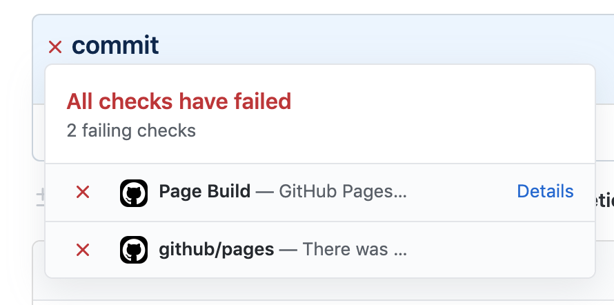
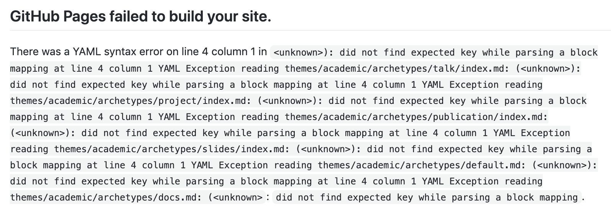

【Hugo】JekyllじゃないサイトをGitHubに上げたらエラーが出た
Contents
Hugoで作成したページをGitHub Pagesに上げたのですが、いくら待っても反映されませんでした。
レポジトリのページを見るとバツマークが付いてる
コミット履歴のところにバツが付いていて、こんなエラーが出ていました。

詳細を見てみると…

別のページを公開した時は特に出なかったのですが、今回のページは、普通のレポジトリではなく 「（ユーザー名）.github.io」というPages専用のレポジトリです。
そのためにサイトの構築方法を少し変えているのですが、どうやらそれが原因のよう。
レポジトリの設定ページからPagesの項目を見てみると、警告が出ていてJekyllがどうのこうのと書かれています。
JekyllはGitHub Pagesが正式にサポートしている静的ページエディタですが、自分はHugoを使用しているので関係ないはず。
GitHub側がHugo製のサイトをJekyll製だと勘違いして、ページを構築できずエラーを吐いているのだと気づきました（時間かかった）。
.nojekyllファイルを置く
公開用フォルダ（「public」や「gh-pages」など）で以下のコマンドを実行して、空ファイルを置いておきます。
$ touch .nojekyll
これがあると、Jekyll製ではないと認識してくれるみたいです。
自分の場合はこのファイル一つで解決したので終了。 数分後には公開されてました。 よかった…。
Comments
comments powered by Disqus